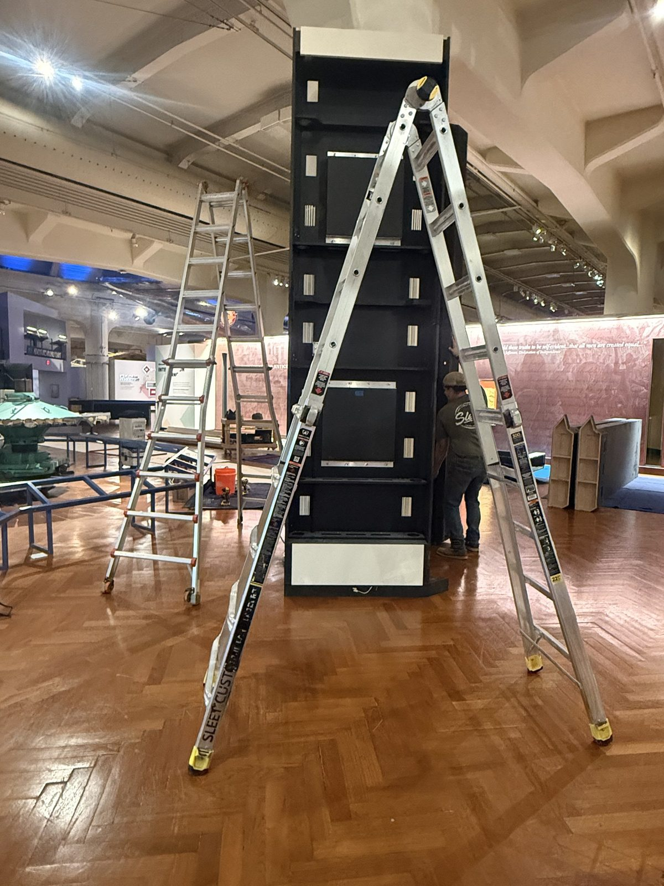

Hi, I’m Yasmin.
About Me
Hi! I’m Yasmin, a Digital Exhibit Designer at The Henry Ford Museum with a multidisciplinary background in UX design, user research, and digital marketing. I’m passionate about bringing stories to life through digital experiences—and deeply inspired by history, fashion, and art.
View Projects →- Role
- Digital Exhibit Designer, The Henry Ford Museum
- Based in
- United States
- Focus
- Interactive Exhibit Design · UX Design · UX Research · Digital Marketing
- Currently
- Bringing stories to life through digital experiences
Snippets About My Life
By blending design, research, and exhibit development, I bring a fresh, curious perspective to every team. To me, every project is an opportunity to experiment, innovate, and create something people will remember.

UX ( User Experience) Design
UX Research
Digital Marketing
Projects
All projects →01
The Henry Ford Jackson Home Visitor Flow Simulation
UX Researcher | Experience DesignPassword protected

02
Designing an Interactive Museum Experience for Power & Energy
UX Designer| Experience Design | Project ManagementPassword protected

03
Rhode Island State COVID Vaccine App/401 Health App
UX Designer| UX Researcher | UX ConsultantPassword protected

04
Reimagining How Engineers Discover Littelfuse Products
UX Consultant | UX Designer |UX ResearcherPassword protected

Contact
Let’s create something people will remember.
- Phone
- (313) 979-2205
- [URL — pending client]